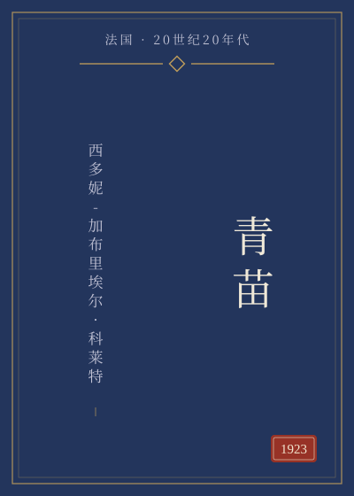
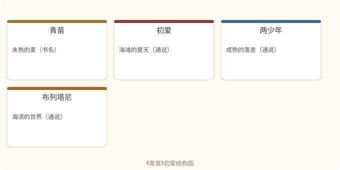

青苗
一、基本信息
| 作者 | 西多妮-加布里埃尔·科莱特 |
|---|---|
| 成书/出版 | 1923年（Britannica B404：Le Blé en herbe (1923; The Ripening Seed)） Colette — Encyclopaedia Britannica（百科全书） |
| 国别/地区 | 法国 |
| 时代 | 近代 · 20世纪20年代 |
| 体裁 | 长篇小说 |
| 语言 | 法语 |

《青苗》初爱结构图（主题·结构图）
二、创作背景
Britannica（B404）：Le Blé en herbe——'The Ripening Seed'——作品列表。
Britannica（B404）：科莱特——'the annalist of female existence'——'the pains and pleasures of love'。
题材（通说待核）：菲洛与万达的布列塔尼暑假——'青苗'的初爱。
三、内容脉络
（通说待核）两个少年的海滩初爱。
（通说待核）'青苗'：未熟之爱的收获。
四、主要人物表
| 人物 | 身份 | 说明 |
|---|---|---|
| 菲洛 | 少年 | （通说待核） |
| 万达 | 少女 | （通说待核） |
五、主题与艺术特点
- '初爱'的成熟（书名语境——通说待核）。
- '发芽、开花或飞翔'（B404：everything that...）。
- 布列塔尼的夏天（通说待核）。
六、影响与评论
- Britannica：Le Blé en herbe (1923)（B404）。
Colette — Encyclopaedia Britannica（百科全书） - Britannica：'the pains and pleasures of love'（B404）。
Colette — Encyclopaedia Britannica（百科全书）
七、阅读建议
难点
- '青苗'的隐喻。
- 布列塔尼海滨（通说待核）。
- 《青苗》中译名（《麦青时节》）待核。
- 法文原版（公有领域状态待核）。
科莱特中期；与《吉吉》对读。
八、待核实
- 菲洛/万达人名核对（通说）。
- 1923年出版细节待核。
- '布列塔尼'细节待核。